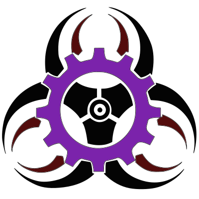

<nav class="navbar navbar-expand-md fixed-top navbar-dark bg-dark">
    <div *ngIf="_authService.loggedIn()" class="navbar-collapse collapse w-100 order-1 order-md-0 dual-collapse2">
        <ul class="navbar-nav mr-auto">
            <li class="nav-item">
                <a class="nav-link">Líneas</a>
            </li>
            <li class="nav-item">
                <a class="nav-link" [routerLink]="['/key']" [routerLinkActive]="['active']">Agregar clave</a>
            </li>
            <li class="nav-item">
                <a class="nav-link" href="#">Link</a>
            </li>
            <li class="nav-item">
                <a class="nav-link" href="#">Link</a>
            </li>
            <li class="nav-item">
                <a class="nav-link" href="#">Link</a>
            </li>
        </ul>
    </div>
    <div [ngClass]="{'mx-auto order-0': _authService.loggedIn()}">
        <a class="navbar-brand mx-auto" [routerLink]="['/home']">
            
            Catalogo
        </a>
        <button class="navbar-toggler" type="button" data-toggle="collapse" data-target=".dual-collapse2">
            <span class="navbar-toggler-icon"></span>
        </button>
    </div>
    <div *ngIf="_authService.loggedIn()" class="navbar-collapse collapse w-100 order-3 dual-collapse2">
        <ul class="navbar-nav ml-auto">
            <li style="cursor: pointer;" class="nav-link" (click)="_authService.logoutUser()">Salir <i
                    class="fas fa-sign-out-alt"></i></li>
        </ul>
    </div>
</nav>
<app-chat *ngIf="_authService.loggedIn()"></app-chat>
<router-outlet></router-outlet>